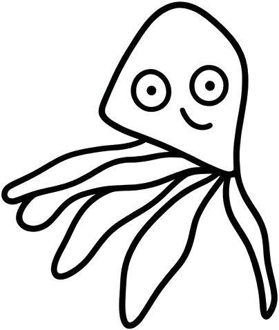

Bienvenido a Pulpo, un espacio cultural en el corazón de San Fernando donde el arte, la música y el café se encuentran. Un lugar para compartir ideas, disfrutar de buena compañía y descubrir nuevas expresiones creativas.
Horario: Martes a domingo, de 9:00 a 22:00
Dirección: Av. Libertador 1234, San Fernando, Buenos Aires
Contacto: hola@pulpo.com.ar | +54 11 5555 5555
Pulpo nació con la idea de crear un punto de encuentro para artistas, vecinos y amantes del café. Aquí se combinan exposiciones, talleres, música en vivo y una carta pensada para acompañar cada momento del día.
Misión: Fomentar la cultura local y ofrecer un espacio abierto a la creatividad.
Visión: Ser un referente cultural en la zona norte del Gran Buenos Aires.
Reservas para eventos privados, presentaciones o reuniones culturales.
Espacio disponible: hasta 50 personas, con equipamiento de sonido y proyección.
Consultas: eventos@pulpo.com.ar
(Espacio para imágenes del lugar, eventos y obras de arte. Se pueden usar fotos de stock o imágenes temporales hasta contar con material propio.)
Dirección: Av. Libertador 1234, San Fernando, Buenos Aires
Teléfono: +54 11 5555 5555
Correo: hola@pulpo.com.ar
Redes sociales:
Instagram: @pulpo.cultural
Facebook: Pulpo Café Cultural